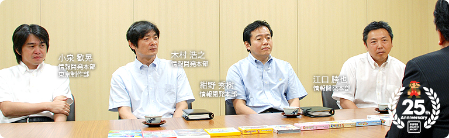
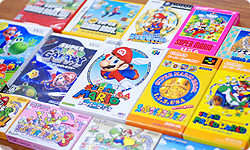
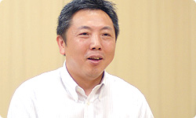
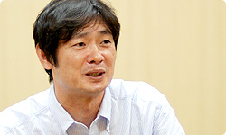

### 「スーパーマリオ２５周年」

<DIV ID="volbox-5"><P CLASS="volnum1"><A CLASS="btn-volnum1" TITLE="社長の代わりに糸井重里さんが訊く" HREF="../vol1/index.html">社長の代わりに糸井重里さんが訊く
<P CLASS="volnum2"><A CLASS="btn-volnum2" TITLE="ファミコンとマリオ 篇" HREF="../vol2/index.html">ファミコンとマリオ 篇
<P CLASS="volnum3"><A CLASS="btn-volnum3s" TITLE="『スーパーマリオ』シリーズ開発経験者 篇 その１">『スーパーマリオ』シリーズ開発経験者 篇 その１
<P CLASS="volnum4"><A CLASS="btn-volnum4" TITLE="『スーパーマリオ』シリーズ開発経験者 篇 その２" HREF="../vol4/index.html">『スーパーマリオ』シリーズ開発経験者 篇 その２
<P CLASS="volnum5"><A CLASS="btn-volnum5" TITLE="『スーパーマリオ』生みの親たち 篇" HREF="../vol5/index.html">『スーパーマリオ』生みの親たち 篇

<DIV ID="main-visual">
<H2>
<DIV ID="pagebox-wrap">
<DIV CLASS="pagebox">
<P CLASS="pagenums"><A>1. 『スーパーマリオ』以降に入社して
<P CLASS="pagenum"><A HREF="index2.html">2. それぞれの『スーパーマリオ』との出会い
<P CLASS="pagenum"><A HREF="index3.html">3. 『スーパーマリオ』を“『マリオ』らしく”するために
<P CLASS="pagenum"><A HREF="index4.html">4. 夜中にジェスチャー
<P CLASS="pagenum"><A HREF="index5.html">5. 右に進んでいけば、いつかゴールに
<P CLASS="pagenum"><A HREF="index6.html">6. 『スーパーマリオ』と自転車

<DIV>

<DIV ID="int-box-wrap" CLASS="name5">
<H3>
<DIV CLASS="int-box"><DIV CLASS="int-name"><P>岩田
<DIV CLASS="int-text"><P>（並べられた『スーパーマリオ』シリーズのパッケージを見て）<br>壮観ですね・・・。
<DIV CLASS="clear"><DIV CLASS="img-photo">
<DIV CLASS="int-box"><DIV CLASS="int-name"><P>&nbsp;
<DIV CLASS="int-text"><P>さて今日は、『スーパーマリオ』シリーズを支えてきた<br>開発経験者のみなさんに集まってもらいました。<br>２５年前に『スーパーマリオ』が発売されたとき、<br>まだ任天堂の人ではなかったみなさんが入社してから、<br>これまでどのように『マリオ』に関わってきたのかを<br>訊いてみようと思います。<br>&nbsp;<br>まず、それぞれ関わった『マリオ』シリーズの<br>タイトルについてお訊きしたいのですが、<br>江口さんからお願いできますか。
<DIV CLASS="clear"><DIV CLASS="int-box"><DIV CLASS="int-name"><P>江口
<DIV CLASS="int-text"><P>わたしは８６年に入社しまして・・・。
<DIV CLASS="clear"><DIV CLASS="int-box"><DIV CLASS="int-name"><P>岩田
<DIV CLASS="int-text"><P>『スーパーマリオ』<sup>（※1）</sup>発売の翌年ですね。
<DIV CLASS="clear"><DIV CLASS="int-box"><DIV CLASS="int-name"><P>江口
<DIV CLASS="int-text"><P>はい。『スーパーマリオ』が出た翌年に入社して、<br>しばらく別の仕事をしていたんですけど、その後<br>『スーパーマリオ３』<sup>（※2）</sup>で初めて『マリオ』の開発に関わりました。
<DIV CLASS="clear"><DIV CLASS="img-photo">
<DIV CLASS="int-box"><DIV CLASS="int-name"><P>岩田
<DIV CLASS="int-text"><P>『マリオ３』ではどんな仕事をされていたんですか？
<DIV CLASS="clear"><DIV CLASS="int-box"><DIV CLASS="int-name"><P>江口
<DIV CLASS="int-text"><P>そのときはコースを描く仕事の手伝いをしていました。<br>その後は別の仕事をしましたが、<br>スーパーファミコンの『スーパーマリオワールド』<sup>（※3）</sup>をつくるときに<br>再びマリオチームに戻って、<br>コースディレクターとしてコースをひたすらつくりました。<br>それ以降、また他の仕事にシフトしましたので、<br>『マリオ』シリーズには関わっていないんですけど、<br>『マリオ』シリーズの仲間では<SCRIPT LANGUAGE="JavaScript" TYPE="text/javascript">
<!--
	document.write('<A HREF="player.html?width=300&amp;height=355&amp;id=001" CLASS="thickbox 001" TITLE="『ヨッシーストーリー』"><SPAN>『ヨッシーストーリー』<'+'/SPAN><'+'/A>');
//-->
</SCRIPT><NOSCRIPT><A HREF="img/slide001.jpg"><SPAN>『ヨッシーストーリー』</SPAN></NOSCRIPT><sup>（※4）</sup>の<br>コースづくりを手伝ったりしました。
<DIV CLASS="clear"><DIV CLASS="int-box"><DIV CLASS="int-name"><P>岩田
<DIV CLASS="int-text"><P>江口さんは、その後<SCRIPT LANGUAGE="JavaScript" TYPE="text/javascript">
<!--
	document.write('<A HREF="player.html?width=400&amp;height=369&amp;id=002" CLASS="thickbox 002" TITLE="『どうぶつの森』"><SPAN>『どうぶつの森』<'+'/SPAN><'+'/A>');
//-->
</SCRIPT><NOSCRIPT><A HREF="img/slide002.jpg"><SPAN>『どうぶつの森』</SPAN></NOSCRIPT><sup>（※5）</sup>や<br><SCRIPT LANGUAGE="JavaScript" TYPE="text/javascript">
<!--
	document.write('<A HREF="player.html?width=300&amp;height=366&amp;id=003" CLASS="thickbox 003" TITLE="『Wii Sports』"><SPAN>『Wii Sports』<'+'/SPAN><'+'/A>');
//-->
</SCRIPT><NOSCRIPT><A HREF="img/slide003.jpg"><SPAN>『Wii Sports』</SPAN></NOSCRIPT>
<sup>（※6）</sup>などのソフト開発に関わったんですよね。
<DIV CLASS="clear"><DIV CLASS="int-box"><DIV CLASS="int-name"><P>江口
<DIV CLASS="int-text"><P>はい。
<DIV CLASS="notes-box"><DIV CLASS="notes-num"><P>※1
<DIV CLASS="notes-text"><P>『スーパーマリオ』＝『スーパーマリオブラザーズ』。１９８５年９月に、ファミコンで発売されたアクションゲーム。
<DIV CLASS="clear">
<DIV CLASS="clear">
<DIV CLASS="notes-box"><DIV CLASS="notes-num"><P>※2
<DIV CLASS="notes-text"><P>『スーパーマリオ３』＝『スーパーマリオブラザーズ３』。１９８８年１０月に、ファミコン用ソフトとして発売されたアクションゲーム。
<DIV CLASS="clear">
<DIV CLASS="clear">
<DIV CLASS="notes-box"><DIV CLASS="notes-num"><P>※3
<DIV CLASS="notes-text"><P>『スーパーマリオワールド』＝スーパーファミコンと同時発売されたアクションゲーム。シリーズ４作目。１９９０年１１月発売。
<DIV CLASS="clear">
<DIV CLASS="clear">
<DIV CLASS="notes-box"><DIV CLASS="notes-num"><P>※4
<DIV CLASS="notes-text"><P>『ヨッシーストーリー』＝NINTENDO64用ソフトとして、１９９７年１２月に発売されたアクションゲーム。

<DIV CLASS="clear">
<DIV CLASS="clear">
<DIV CLASS="notes-box"><DIV CLASS="notes-num"><P>※5
<DIV CLASS="notes-text"><P>『どうぶつの森』＝第１作目は、NINTENDO64用ソフトとして、２００１年４月に発売されたコミュニケーションゲーム。その後、ゲームキューブでは２本、ニンテンドーDSとWiiでもそれぞれ１本ずつ制作され、シリーズは５作を重ねている。
<DIV CLASS="clear">
<DIV CLASS="clear">
<DIV CLASS="notes-box"><DIV CLASS="notes-num"><P>※6
<DIV CLASS="notes-text"><P>『Wii Sports』＝２００６年１２月に、Wii本体と同時に発売されたスポーツゲーム。テニス、ベースボール、ボウリング、ゴルフ、ボクシングの５つのスポーツを収録。
<DIV CLASS="clear">
<DIV CLASS="clear">

<DIV CLASS="clear"><DIV CLASS="int-box"><DIV CLASS="int-name"><P>岩田
<DIV CLASS="int-text"><P>次に、江口さんと同期入社の紺野さん、お願いします。
<DIV CLASS="clear"><DIV CLASS="int-box"><DIV CLASS="int-name"><P>紺野
<DIV CLASS="int-text"><P>はい。入社して、大がかりな『マリオ』系の仕事を担当したのが、<br>『夢工場ドキドキパニック』<sup>（※7）</sup>です。
<DIV CLASS="clear"><DIV CLASS="img-photo">
<DIV CLASS="int-box"><DIV CLASS="int-name"><P>岩田
<DIV CLASS="int-text"><P>それはのちに『スーパーマリオＵＳＡ』<sup>（※8）</sup>になるものですね。
<DIV CLASS="clear"><DIV CLASS="int-box"><DIV CLASS="int-name"><P>紺野
<DIV CLASS="int-text"><P>はい。そして江口さんといっしょに<br>『スーパーマリオ３』に関わり、<br>ハードがスーパーファミコンにシフトしていくなかで、<br>『スーパーマリオワールド』の開発にも関わりました。
<DIV CLASS="clear"><DIV CLASS="int-box"><DIV CLASS="int-name"><P>岩田
<DIV CLASS="int-text"><P>『スーパーマリオワールド』では、<br>紺野さんは何を担当されていたんですか？
<DIV CLASS="clear"><DIV CLASS="int-box"><DIV CLASS="int-name"><P>紺野
<DIV CLASS="int-text"><P>まず<SCRIPT LANGUAGE="JavaScript" TYPE="text/javascript">
<!--
	document.write('<A HREF="player.html?mv=movie001&amp;width=320&amp;height=280&amp;id=movie001" CLASS="thickbox movie001" TITLE="全体マップでコースを選ぶ仕組み"><SPAN>全体マップでコースを選ぶ仕組み<'+'/SPAN><'+'/A>');
//-->
</SCRIPT><NOSCRIPT><A HREF="movie/movie001.jpg"><SPAN>全体マップでコースを選ぶ仕組み</SPAN></NOSCRIPT>がありますけど、<br>『マリオ３』をつくったときにその制作に関わって、<br>『スーパーマリオワールド』でも同じようなことをしていました。<br>あとは江口さんといっしょにコースを描いていて、<br>当時は方眼紙にトレーシングペーパーを重ねて、<br>毎日コツコツとコースを描く仕事をしていました。
<DIV CLASS="clear"><DIV CLASS="int-box"><DIV CLASS="int-name"><P>岩田
<DIV CLASS="int-text"><P>当時はコースを考えてから、<br>それを実際にゲームとして動かすまでに時間がとてもかかりましたよね。
<DIV CLASS="clear"><DIV CLASS="int-box"><DIV CLASS="int-name"><P>紺野
<DIV CLASS="int-text"><P>ええ。丸１日はかかっていました。<br>朝にプログラマーに渡したコース図が<br>夜になると動く状態であがってくるんですが、<br>実際に動かしてみると<br>クリボーが地面にめり込んだりして（笑）。
<DIV CLASS="clear"><DIV CLASS="int-box"><DIV CLASS="int-name"><P>岩田
<DIV CLASS="int-text"><P>手作業で座標を入力しているので、<br>ミスも多かったですよね（笑）。
<DIV CLASS="clear"><DIV CLASS="int-box"><DIV CLASS="int-name"><P>紺野
<DIV CLASS="int-text"><P>「ああ、また次の日にやり直しだ」<br>みたいなことをしていました。
<DIV CLASS="clear"><DIV CLASS="int-box"><DIV CLASS="int-name"><P>岩田
<DIV CLASS="int-text"><P>その後、紺野さんは<SCRIPT LANGUAGE="JavaScript" TYPE="text/javascript">
<!--
	document.write('<A HREF="player.html?width=400&amp;height=374&amp;id=004" CLASS="thickbox 004" TITLE="『マリオカート』"><SPAN>『マリオカート』<'+'/SPAN><'+'/A>');
//-->
</SCRIPT><NOSCRIPT><A HREF="img/slide004.jpg"><SPAN>『マリオカート』</SPAN></NOSCRIPT>シリーズ<sup>（※9）</sup>に<br>関わることになるんですよね。
<DIV CLASS="clear"><DIV CLASS="int-box"><DIV CLASS="int-name"><P>紺野
<DIV CLASS="int-text"><P>はい。『マリオカート』シリーズを担当して、<br>その他、<SCRIPT LANGUAGE="JavaScript" TYPE="text/javascript">
<!--
	document.write('<A HREF="player.html?width=620&amp;height=220&amp;id=005" CLASS="thickbox 005" TITLE="『nintendogs』"><SPAN>『nintendogs』<'+'/SPAN><'+'/A>');
//-->
</SCRIPT><NOSCRIPT><A HREF="img/slide005.jpg"><SPAN>『nintendogs』</SPAN></NOSCRIPT><sup>（※10）</sup>など、<br>いろんなソフトに関わりました。
<DIV CLASS="notes-box"><DIV CLASS="notes-num"><P>※7
<DIV CLASS="notes-text"><P>『夢工場ドキドキパニック』＝１９８７年７月に、ファミコンディスクシステム用ソフトとして、フジテレビジョンから発売されたアクションゲーム。
<DIV CLASS="clear">
<DIV CLASS="clear">
<DIV CLASS="notes-box"><DIV CLASS="notes-num"><P>※8
<DIV CLASS="notes-text"><P>『スーパーマリオＵＳＡ』＝１９９２年９月に、ファミコン用ソフトとして発売されたアクションゲーム。アメリカで発売された『スーパーマリオ２』の日本版。
<DIV CLASS="clear">
<DIV CLASS="clear">
<DIV CLASS="notes-box"><DIV CLASS="notes-num"><P>※9
<DIV CLASS="notes-text"><P>『マリオカート』シリーズ＝１作目は１９９２年８月に、スーパーファミコン用ソフトとして発売された『スーパーマリオカート』。その後、NINTENDO64やゲームボーイアドバンス、DS、Wiiでも発売され、これまで６作のシリーズが登場しているアクションレースゲーム。
<DIV CLASS="clear">
<DIV CLASS="clear">
<DIV CLASS="notes-box"><DIV CLASS="notes-num"><P>※10
<DIV CLASS="notes-text"><P>『nintendogs』＝ニンテンドーDS用ソフトとして２００５年４月に発売。お気に入りの子犬たちとの触れ合いを楽しむコミュニケーションソフト。
<DIV CLASS="clear">
<DIV CLASS="clear">

<DIV CLASS="clear"><DIV CLASS="int-box"><DIV CLASS="int-name"><P>岩田
<DIV CLASS="int-text"><P>３人目は木村さん、お願いします。
<DIV CLASS="clear"><DIV CLASS="int-box"><DIV CLASS="int-name"><P>木村
<DIV CLASS="int-text"><P>わたしが入社したのは１９８８年です。<br>デザイナーとして別の開発部署に配属されることが<br>決まっていたんですが、入社してしばらくの間、<br>情報開発部で研修を受けることになったんです。<br>そのときに『マリオ３』のディレクターだった手塚（卓志）さんから、<br>「キャラクターをつくってほしい」と言われまして、<br>それで２体のキャラクターを描いたのが<br>初めて『マリオ』に関わった仕事になります。
<DIV CLASS="clear"><DIV CLASS="img-photo">
<DIV CLASS="int-box"><DIV CLASS="int-name"><P>岩田
<DIV CLASS="int-text"><P>ちなみにそのキャラクターは何だったのですか？
<DIV CLASS="clear"><DIV CLASS="int-box"><DIV CLASS="int-name"><P>木村
<DIV CLASS="int-text"><P><SCRIPT LANGUAGE="JavaScript" TYPE="text/javascript">
<!--
	document.write('<A HREF="player.html?width=280&amp;height=378&amp;id=006" CLASS="thickbox 006" TITLE="スイチューカ"><SPAN>スイチューカ<'+'/SPAN><'+'/A>');
//-->
</SCRIPT><NOSCRIPT><A HREF="img/slide006.jpg"><SPAN>スイチューカ</SPAN></NOSCRIPT>と<SCRIPT LANGUAGE="JavaScript" TYPE="text/javascript">
<!--
	document.write('<A HREF="player.html?width=500&amp;height=318&amp;id=007" CLASS="thickbox 007" TITLE="ガボン"><SPAN>ガボン<'+'/SPAN><'+'/A>');
//-->
</SCRIPT><NOSCRIPT><A HREF="img/slide007.jpg"><SPAN>ガボン</SPAN></NOSCRIPT>です。<br>それがそのまま製品に入るような経験をしました。<br>スイチューカは『マリオ３』にしか出なかったんですけど、<br>ガボンのほうは、その後もいろんなソフトに登場しました。
<DIV CLASS="clear"><DIV CLASS="int-box"><DIV CLASS="int-name"><P>岩田
<DIV CLASS="int-text"><P>研修中に描いたキャラクターが、<br>そのままゲームに採用されるというのはスゴイですね（笑）。
<DIV CLASS="clear"><DIV CLASS="int-box"><DIV CLASS="int-name"><P>木村
<DIV CLASS="int-text"><P>はい。すごくうれしかったです（笑）。<br>その後、他の部署に配属されたのですが、<br>しばらくしてから、また情報開発部に異動して<br><SCRIPT LANGUAGE="JavaScript" TYPE="text/javascript">
<!--
	document.write('<A HREF="player.html?width=500&amp;height=328&amp;id=008" CLASS="thickbox 008" TITLE="『スーパーマリオアドバンス』シリーズ"><SPAN>『スーパーマリオアドバンス』シリーズ<'+'/SPAN><'+'/A>');
//-->
</SCRIPT><NOSCRIPT><A HREF="img/slide008.jpg"><SPAN>『スーパーマリオアドバンス』シリーズ</SPAN></NOSCRIPT><sup>（※11）</sup>を担当しました。
<DIV CLASS="clear"><DIV CLASS="int-box"><DIV CLASS="int-name"><P>岩田
<DIV CLASS="int-text"><P>『スーパーマリオアドバンス』シリーズは、<br>『マリオ』シリーズの旧作をゲームボーイアドバンスで<br>遊べるように、ということではじまった企画でしたね。
<DIV CLASS="clear"><DIV CLASS="int-box"><DIV CLASS="int-name"><P>木村
<DIV CLASS="int-text"><P>はい。最初から４本のシリーズで出ることが決まっていて、<br>いちばん最初が『マリオＵＳＡ』で、<br>次に『マリオワールド』、そして『ヨッシーアイランド』<sup>（※12）</sup>が来て、<br>最後に『マリオ３』という順番でした。<br>で、『マリオアドバンス１』のときはデザイナーとして関わりました。
<DIV CLASS="clear"><DIV CLASS="int-box"><DIV CLASS="int-name"><P>岩田
<DIV CLASS="int-text"><P>最初はデザイナーとしての参加だったんですか。
<DIV CLASS="clear"><DIV CLASS="int-box"><DIV CLASS="int-name"><P>木村
<DIV CLASS="int-text"><P>そうなんです。<br>そこで、『マリオアドバンス２』以降、<br>誰がディレクターをするかという話になったとき、<br>『１』のときにわたしがデザインリーダーをしていたこともあって、<br>「木村に『２』からディレクターを任せようか」という話になりました。
<DIV CLASS="clear"><DIV CLASS="int-box"><DIV CLASS="int-name"><P>岩田
<DIV CLASS="int-text"><P>そんな言い方をしてしまうと<br>成り行きでディレクターをやったみたいですよ（笑）。
<DIV CLASS="clear"><DIV CLASS="int-box"><DIV CLASS="int-name"><P>木村
<DIV CLASS="int-text"><P>すみません（笑）。えー、そういうわけではなくて、<br>もともとわたしはデザイナーとして会社に入りましたけど、<br>自分でゲームを考えてつくるような仕事をしたいということを<br>ずっとアピールしていましたので、<br>それで「任せてみようか」ということになったんだと思います。
<DIV CLASS="clear"><DIV CLASS="int-box"><DIV CLASS="int-name"><P>岩田
<DIV CLASS="int-text"><P>なるほど。そしてDSで出た『Newスーパーマリオ』<sup>（※13）</sup>と<br>Wiiで出た『NewスーパーマリオWii』<sup>（※14）</sup>の２つに関わったんですね。
<DIV CLASS="clear"><DIV CLASS="int-box"><DIV CLASS="int-name"><P>木村
<DIV CLASS="int-text"><P>はい。その２作にはプロデューサーとして関わりました。
<DIV CLASS="notes-box"><DIV CLASS="notes-num"><P>※11
<DIV CLASS="notes-text"><P>『スーパーマリオアドバンス』シリーズ＝ゲームボーイアドバンスで登場した、アクションゲームシリーズ。１作目は２００１年３月に、２作目は同年１２月、３作目は２００２年９月、４作目は２００３年７月に発売された。
<DIV CLASS="clear">
<DIV CLASS="clear">
<DIV CLASS="notes-box"><DIV CLASS="notes-num"><P>※12
<DIV CLASS="notes-text"><P>『ヨッシーアイランド』＝『スーパーマリオ ヨッシーアイランド』。１９９５年８月に、スーパーファミコン用ソフトとして発売されたアクションゲーム。
<DIV CLASS="clear">
<DIV CLASS="clear">
<DIV CLASS="notes-box"><DIV CLASS="notes-num"><P>※13
<DIV CLASS="notes-text"><P>『Newスーパーマリオ』＝『New スーパーマリオブラザーズ』。２００６年５月に、ニンテンドーDSで発売されたアクションゲーム。
<DIV CLASS="clear">
<DIV CLASS="clear">
<DIV CLASS="notes-box"><DIV CLASS="notes-num"><P>※14
<DIV CLASS="notes-text"><P>『NewスーパーマリオWii』＝『New スーパーマリオブラザーズ Wii』。２００９年１２月に、Wii用ソフトとして発売されたアクションゲーム。
<DIV CLASS="clear">
<DIV CLASS="clear">

<DIV CLASS="clear"><DIV CLASS="int-box"><DIV CLASS="int-name"><P>岩田
<DIV CLASS="int-text"><P>最後にいちばん若い小泉さん、お願いします。
<DIV CLASS="clear"><DIV CLASS="int-box"><DIV CLASS="int-name"><P>小泉
<DIV CLASS="int-text"><P>僕は９１年入社なので、<br>『マリオワールド』が出た翌年に入ったのですが、<br>もともとゲーム制作の仕事で入ったわけではなくて、<br>ゲームソフトのパッケージや、<br>取扱説明書のイラストを描く仕事を担当していました。
<DIV CLASS="clear"><DIV CLASS="img-photo">
<DIV CLASS="int-box"><DIV CLASS="int-name"><P>岩田
<DIV CLASS="int-text"><P>社内ではアートワークと呼ばれている仕事ですね。
<DIV CLASS="clear"><DIV CLASS="int-box"><DIV CLASS="int-name"><P>小泉
<DIV CLASS="int-text"><P>はい。そこで、<A HREF="../../../../ds/interview/dsi/vol8/index.html"><SPAN>小田部羊一さん</SPAN><sup>（※15）</sup>に<br>キャラクターの描き方を教えていただいて、<br>マリオを毎日描くような日々を送っていました。
<DIV CLASS="clear"><DIV CLASS="int-box"><DIV CLASS="int-name"><P>岩田
<DIV CLASS="int-text"><P>小田部さんの弟子として、勉強されていたんですね。
<DIV CLASS="clear"><DIV CLASS="int-box"><DIV CLASS="int-name"><P>小泉
<DIV CLASS="int-text"><P>「マリオの線の太さはこれくらいなんだよ」とか<br>「この線は２ミリね。この目の間は１ミリかな」<br>みたいなことを言われながら仕事をしていました。<br>で、何かの偶然というか、<br>偶然かどうかわからないんですけど、<br>NINTENDO64が出る前の９４年、９５年頃に、<br>『マリオ６４』の仕事に関わることになったんです。
<DIV CLASS="clear"><DIV CLASS="int-box"><DIV CLASS="int-name"><P>岩田
<DIV CLASS="int-text"><P>小田部さんの弟子から、<br>宮本さんの弟子に移ったのは何がキッカケだったんですか？
<DIV CLASS="clear"><DIV CLASS="int-box"><DIV CLASS="int-name"><P>小泉
<DIV CLASS="int-text"><P>僕は、３ＤＣＧデザインの勉強を<br>専門でしてきたわけではないんですが、<br>もう、ほとんど個人的な趣味のような感じで、<br>グラフィック機能で評判だった<br>ＡＭＩＧＡ（アミーガ）<sup>（※16）</sup>というコンピューターを個人で輸入して、<br>家でコツコツと３Ｄモデリングやアニメーションをつくって、<br>それを宮本さんに見せたりしていました。<br>で、気がつくと『マリオ６４』のプレイヤーキャラクターの<br>モデルアニメーションを自分が担当するようになっていました。<br>しかも、３Ｄの時代になっていましたので、<br>カメラの設計をしたり、敵や地形をつくったりと、<br>当時はいろんなことをやっていたんです。
<DIV CLASS="clear"><DIV CLASS="int-box"><DIV CLASS="int-name"><P>岩田
<DIV CLASS="int-text"><P>当時は３Ｄアクションの制作作法が確立されていなかったですから、<br>その世界に興味がある人が、どんどん突き進んで<br>勝手にいろんなものをつくっていったわけですね。
<DIV CLASS="clear"><DIV CLASS="int-box"><DIV CLASS="int-name"><P>小泉
<DIV CLASS="int-text"><P>そうです。ホントに勝手につくって、とめどなく広げて<br>宮本さんには迷惑をかけたんじゃないかと思っています（笑）。<br>そういう関わりをして・・・。
<DIV CLASS="clear"><DIV CLASS="int-box"><DIV CLASS="int-name"><P>岩田
<DIV CLASS="int-text"><P>だから３Ｄの『マリオ』をずっとやってきたんですね。
<DIV CLASS="clear"><DIV CLASS="int-box"><DIV CLASS="int-name"><P>小泉
<DIV CLASS="int-text"><P>はい。マリオシリーズでは、『マリオサンシャイン』<sup>（※17）</sup>と<br>『マリオギャラクシー』シリーズに<sup>（※18）</sup>関わりました。
<DIV CLASS="notes-box"><DIV CLASS="notes-num"><P>※15
<DIV CLASS="notes-text"><P>小田部羊一さん＝アニメ『アルプスの少女ハイジ』などを制作した日本を代表するアニメーターのひとり。東映動画退職後に任天堂に入社し、マリオのキャラクターデザインなどの仕事に携わる。現在フリーとして活躍中。
<DIV CLASS="clear">
<DIV CLASS="clear">
<DIV CLASS="notes-box"><DIV CLASS="notes-num"><P>※16
<DIV CLASS="notes-text"><P>ＡＭＩＧＡ（アミーガ）＝１９８５年にコモドール社より発売されたパーソナルコンピューター。
<DIV CLASS="clear">
<DIV CLASS="clear">
<DIV CLASS="notes-box"><DIV CLASS="notes-num"><P>※17
<DIV CLASS="notes-text"><P>『マリオサンシャイン』＝『スーパーマリオサンシャイン』。２００２年７月に、ゲームキューブソフトとして発売された３Ｄアクションゲーム。
<DIV CLASS="clear">
<DIV CLASS="clear">
<DIV CLASS="notes-box"><DIV CLASS="notes-num"><P>※18
<DIV CLASS="notes-text"><P>『マリオギャラクシー』シリーズ＝Wii用３Ｄアクションゲーム。１作目は２００７年１１月に、２作目は２０１０年５月に発売された。
<DIV CLASS="clear">
<DIV CLASS="clear">

<DIV CLASS="clear"><DIV ID="asks-pagination">
<DIV ID="page-next"><A HREF="index2.html">2. それぞれの『スーパーマリオ』との出会い
<DIV CLASS="clear">
<DIV CLASS="clear">
<DIV ID="ftr">
<P CLASS="home"><A HREF="../../../../index.html">任天堂ホームページ
<P CLASS="pagetop"><A HREF="#pagetop">ページの一番上へ
<DIV CLASS="clear">

<DIV CLASS="clear">
</BODY>
</HTML>
